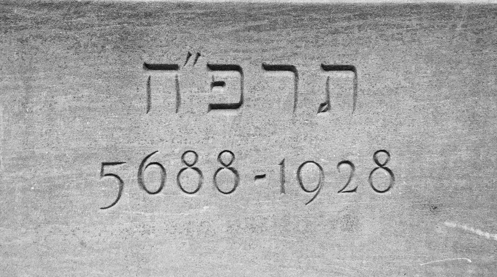
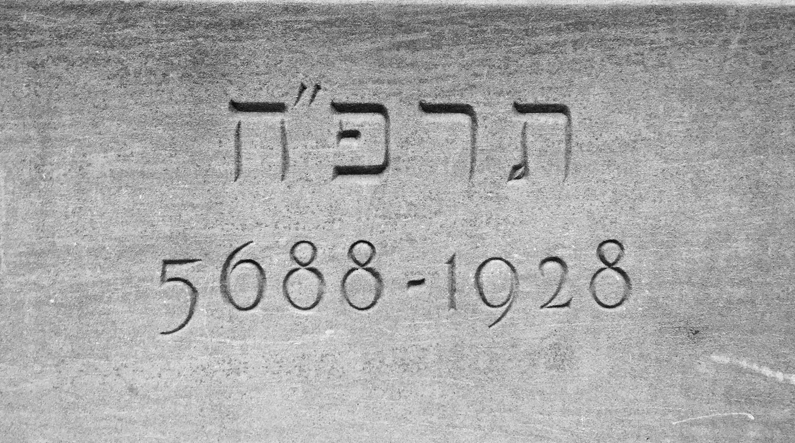

The placement of a stone on a building is a practice that dates back to Mesopotamia and Ancient Egypt. Though the significance of this has changed throughout history, the main ideas and reasons for this is still relavant today. In Ancient Egypt, there were ceremonies whose purpose was to be performed during the placement of the cornerstone. As such, this tradition used to be more religious as it made sure that the gods would protect the building. In today's society, the placement of a corerstone can have religious meaning while there are instances where there is little to no association with religion. Additionally there were offerings placed infront of the stone for spiritual purposes. Today, there are still occassions when offerings are placed infront of the cornerstones in certain places. The importance of the religious meaning and ceremonies that accompanied this tradition have greatly decreased.
The images on this page are in chronological order with the oldest cornerstone being from the year 1978 which can be found on the top right side of this page. From there, each row from left to right has stones whose dates follow the first one. The last cornerstone is from the year 1991. By clicking on any image, you are taken to a page with that image on a larger scale. There is some additional text to support the image and further explain and describe it. On the right-hand side of each image there are coordinate points. By clicking on these coordinate points, you are then re-directed to the bottom of the main page where there is a map and dots of all the coordinate places for each image included on the site.